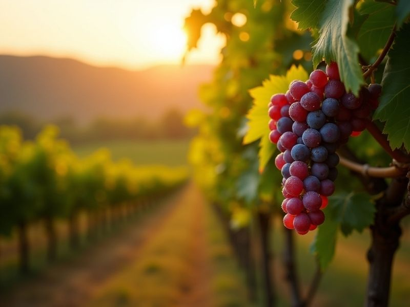
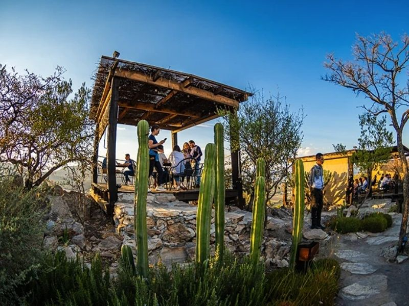
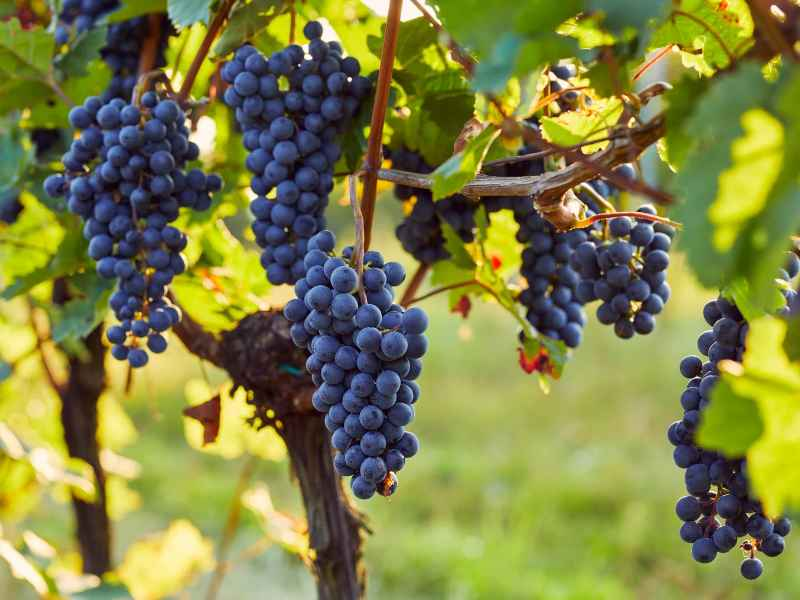

Cada copa que servimos es el resultado de un respeto profundo por la tierra. Nuestro viñedo está emplazado en una región privilegiada que otorga a nuestras uvas una identidad inconfundible, balanceando la acidez y la expresión frutal de manera magistral.

Ubicados en una altitud que favorece la amplitud térmica, nuestro terroir en Querétaro ofrece las condiciones climáticas y de suelo perfectas. La composición mineral de la tierra se transmite directamente a la vid, otorgando a nuestros vinos un carácter único, de gran estructura y personalidad vibrante.

Nuestra vinificación es un proceso de precisión y paciencia. Realizamos la vendimia de forma manual, seleccionando cuidadosamente cada racimo. Posteriormente, el mosto reposa en cavas con temperatura controlada y barricas de roble francés y americano, donde el tiempo hace su trabajo para lograr la máxima expresión aromática.

Creemos en el cuidado del entorno. Implementamos sistemas de riego inteligente para optimizar el uso del agua y evitamos el uso de pesticidas agresivos. Nuestro compromiso es mantener un ecosistema equilibrado donde la flora y fauna locales coexistan en armonía con nuestras viñas.